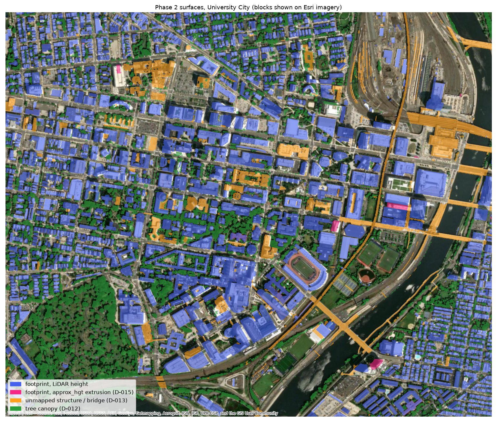
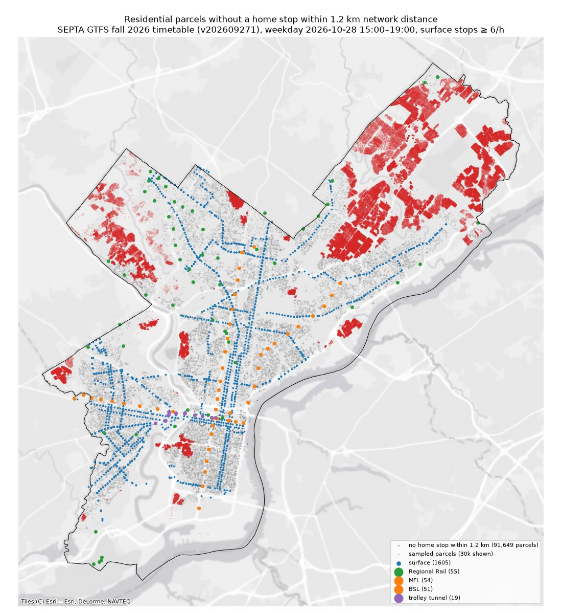

Data
Where the shade map comes from, and who we follow home.
Sources
All inputs are public data.
| Layer | Source | Used for |
|---|---|---|
| Airborne LiDAR, March 2022 | City of Philadelphia, via NOAA Digital Coast and PASDA | ground, building and tree heights at 1 m |
| Building footprints | City of Philadelphia (OpenDataPhilly) | building outlines |
| Land cover 2018 | PASDA | tree canopy |
| Canopy height (CHMv2) | Meta / WRI, CC BY 4.0 | trees just outside the city |
| Pedestrian network | DVRPC | sidewalks and crosswalks |
| OpenStreetMap | OSM contributors, ODbL | bridges, covered walkways, campus footways |
| Transit | SEPTA, fall 2026 timetable | rapid-transit stations and frequent bus stops |
| Properties | City of Philadelphia (OPA) | residential parcels, where walks end |
The shade map
Building and tree heights come from the 2022 LiDAR survey, flown before the leaves came out. Building heights agree closely with the city’s own records (median absolute difference 0.5 m over 541,222 buildings); bridges and elevated rail lines are included, so they cast shadows too. Trees cover 17% of the city in the model (the median tree is 15 m tall). Covered walkways and passages through buildings (4.2 km) are always in shade.

Whose walks
Each walk starts at a stop: any rapid-transit station (Regional Rail, L (Market-Frankford), B (Broad Street) or the T trolley tunnel) or a bus stop with at least 6 buses an hour in one direction between 15:00 and 19:00. Every home within 1.2 km walking distance of such a stop is one walk, 431,100 in all. The other 91,649 homes (17.5%), mostly in the Northeast and Roxborough, have no frequent stop that close.

University City
For University City we mapped the entrances and indoor passages of 41 buildings (4.4 km of passages); 10 of them can be entered without a Penn ID. Campus footpaths from OpenStreetMap are added to the sidewalk network there.
Known gaps
- Outside University City, campus and park paths are missing, so cooler options inside campuses and parks are understated.
- Shadows assume clear skies on two summer days; trees are mapped from leaf-off LiDAR and 2018 land cover, buildings from 2022.
- Missing or misplaced footprints, newer buildings and temporary objects (parked trains, scaffolding) affect shade locally.
- The timetable is one weekday in fall 2026; summer service may differ.